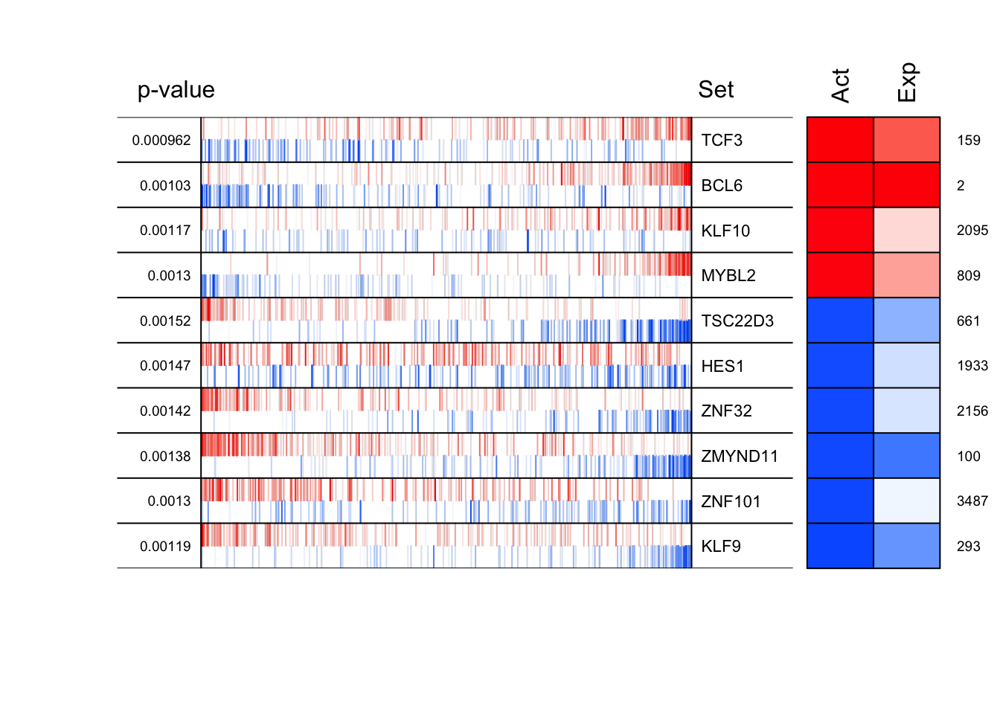

Last updated: 2024-05-21
Checks: 7 0
Knit directory: PPP/
This reproducible R Markdown analysis was created with workflowr (version 1.7.1). The Checks tab describes the reproducibility checks that were applied when the results were created. The Past versions tab lists the development history.
Great! Since the R Markdown file has been committed to the Git repository, you know the exact version of the code that produced these results.
Great job! The global environment was empty. Objects defined in the global environment can affect the analysis in your R Markdown file in unknown ways. For reproduciblity it’s best to always run the code in an empty environment.
The command set.seed(20240521) was run prior to running
the code in the R Markdown file. Setting a seed ensures that any results
that rely on randomness, e.g. subsampling or permutations, are
reproducible.
Great job! Recording the operating system, R version, and package versions is critical for reproducibility.
Nice! There were no cached chunks for this analysis, so you can be confident that you successfully produced the results during this run.
Great job! Using relative paths to the files within your workflowr project makes it easier to run your code on other machines.
Great! You are using Git for version control. Tracking code development and connecting the code version to the results is critical for reproducibility.
The results in this page were generated with repository version e4c8a72. See the Past versions tab to see a history of the changes made to the R Markdown and HTML files.
Note that you need to be careful to ensure that all relevant files for
the analysis have been committed to Git prior to generating the results
(you can use wflow_publish or
wflow_git_commit). workflowr only checks the R Markdown
file, but you know if there are other scripts or data files that it
depends on. Below is the status of the Git repository when the results
were generated:
Ignored files:
Ignored: .DS_Store
Note that any generated files, e.g. HTML, png, CSS, etc., are not included in this status report because it is ok for generated content to have uncommitted changes.
These are the previous versions of the repository in which changes were
made to the R Markdown (analysis/viper.Rmd) and HTML
(docs/viper.html) files. If you’ve configured a remote Git
repository (see ?wflow_git_remote), click on the hyperlinks
in the table below to view the files as they were in that past version.
| File | Version | Author | Date | Message |
|---|---|---|---|---|
| Rmd | e4c8a72 | Zhen Zuo | 2024-05-21 | wflow_publish(all = TRUE) |
| html | e4c8a72 | Zhen Zuo | 2024-05-21 | wflow_publish(all = TRUE) |
| html | a8e0d13 | Zhen Zuo | 2024-05-21 | Build site. |
| Rmd | 1bb174f | Zhen Zuo | 2024-05-21 | Publish the initial files for myproject |
# Load packages
library(viper)Loading required package: BiobaseLoading required package: BiocGenerics
Attaching package: 'BiocGenerics'The following objects are masked from 'package:stats':
IQR, mad, sd, var, xtabsThe following objects are masked from 'package:base':
anyDuplicated, aperm, append, as.data.frame, basename, cbind,
colnames, dirname, do.call, duplicated, eval, evalq, Filter, Find,
get, grep, grepl, intersect, is.unsorted, lapply, Map, mapply,
match, mget, order, paste, pmax, pmax.int, pmin, pmin.int,
Position, rank, rbind, Reduce, rownames, sapply, setdiff, table,
tapply, union, unique, unsplit, which.max, which.minWelcome to Bioconductor
Vignettes contain introductory material; view with
'browseVignettes()'. To cite Bioconductor, see
'citation("Biobase")', and for packages 'citation("pkgname")'.library(aracne.networks)# Names of the individual context-specific networks
print(data(package="aracne.networks")$results[, "Item"]) [1] "regulonblca" "regulonbrca" "reguloncesc" "reguloncoad" "regulonesca"
[6] "regulongbm" "regulonhnsc" "regulonkirc" "regulonkirp" "regulonlaml"
[11] "regulonlihc" "regulonluad" "regulonlusc" "regulonnet" "regulonov"
[16] "regulonpaad" "regulonpcpg" "regulonprad" "regulonread" "regulonsarc"
[21] "regulonstad" "regulontgct" "regulonthca" "regulonthym" "regulonucec"print(data(package="aracne.networks"))data(bcellViper, package="bcellViper")
adjfile <- system.file("aracne", "bcellaracne.adj", package = "bcellViper")
regul <- aracne2regulon(adjfile, dset, verbose = FALSE)number of iterations= 301 signature <- rowTtest(dset, "description", c("CB", "CC"), "N")signature <- (qnorm(signature$p.value/2, lower.tail = FALSE) * + sign(signature$statistic))[, 1]nullmodel <- ttestNull(dset, "description", c("CB", "CC"), "N", per = 1000, repos = TRUE, verbose = FALSE)mrs <- msviper(signature, regulon, nullmodel, verbose = FALSE)summary(mrs) Regulon Size NES p.value FDR
TCF3 TCF3 298 3.30 0.000962 0.028
BCL6 BCL6 401 3.28 0.001030 0.028
KLF10 KLF10 254 3.25 0.001170 0.028
MYBL2 MYBL2 240 3.22 0.001300 0.028
TSC22D3 TSC22D3 333 -3.17 0.001520 0.028
HES1 HES1 360 -3.18 0.001470 0.028
ZNF32 ZNF32 291 -3.19 0.001420 0.028
ZMYND11 ZMYND11 452 -3.20 0.001380 0.028
ZNF101 ZNF101 301 -3.22 0.001300 0.028
KLF9 KLF9 337 -3.24 0.001190 0.028plot(mrs, cex = .7)
mrs <- ledge(mrs)
summary(mrs) Regulon Size NES p.value FDR
TCF3 TCF3 298 3.30 0.000962 0.028
BCL6 BCL6 401 3.28 0.001030 0.028
KLF10 KLF10 254 3.25 0.001170 0.028
MYBL2 MYBL2 240 3.22 0.001300 0.028
TSC22D3 TSC22D3 333 -3.17 0.001520 0.028
HES1 HES1 360 -3.18 0.001470 0.028
ZNF32 ZNF32 291 -3.19 0.001420 0.028
ZMYND11 ZMYND11 452 -3.20 0.001380 0.028
ZNF101 ZNF101 301 -3.22 0.001300 0.028
KLF9 KLF9 337 -3.24 0.001190 0.028
Ledge
TCF3 SMARCA4, MCM7, TRAF3IP3, NDC80, + 110 genes
BCL6 KIF14, BUB1, DLGAP4, GINS1, + 217 genes
KLF10 TRIP13, NDC80, AHNAK, KIF2C, + 99 genes
MYBL2 SMARCA4, MCM7, TRIP13, GINS1, + 138 genes
TSC22D3 NOTCH2, RAD1, RBM19, MLEC, + 190 genes
HES1 CDK4, SHC1, STX7, MAN1A1, + 104 genes
ZNF32 GNA12, PLAG1, PSMB1, CARM1, + 145 genes
ZMYND11 ANKRD26, EXTL2, IGFBP4, CTSC, + 234 genes
ZNF101 SLC46A3, GCLM, TCEA2, HMOX2, + 128 genes
KLF9 IFIT1, LPAR1, NID1, STOM, + 158 genessignature <- bootstrapTtest(dset, "description", c("CB", "CC"), "N", verbose = FALSE)
mrs <- msviper(signature, regulon, nullmodel, verbose = FALSE)
mrs <- bootstrapmsviper(mrs, "mode")
plot(mrs, cex = .7)mrshadow <- shadow(mrs, regulators = 25, verbose = FALSE)
summary(mrshadow)$msviper.results
Regulon Size NES p.value FDR
BCL6 BCL6 401 3.18 0.00146 0.0709
MYBL2 MYBL2 240 3.12 0.00184 0.0709
WHSC1 WHSC1 257 3.07 0.00213 0.0709
TOP2A TOP2A 749 3.06 0.00222 0.0709
MYBL1 MYBL1 225 3.04 0.00239 0.0709
PTTG1 PTTG1 471 3.00 0.00273 0.0709
NR1D2 NR1D2 259 -3.00 0.00266 0.0709
TSC22D3 TSC22D3 313 -3.02 0.00255 0.0709
ZNF274 ZNF274 160 -3.04 0.00235 0.0709
ZMYND11 ZMYND11 452 -3.06 0.00220 0.0709
$Shadow.pairs
[1] "BCL6 -> TCF3" "BCL6 -> HES1" "MYBL2 -> ZNF32"
[4] "MYBL2 -> HES1" "MYBL2 -> ZNF23" "MYBL2 -> MEIS2"
[7] "KLF10 -> ZNF101" "KLF10 -> HES1" "KLF9 -> HES1"
[10] "ZNF32 -> HES1" "WHSC1 -> TSC22D3" "WHSC1 -> ZNF101"
[13] "WHSC1 -> IRF5" "WHSC1 -> KDM1A" "WHSC1 -> E2F2"
[16] "TSC22D3 -> HES1" "TSC22D3 -> ZNF23" "TOP2A -> CREB3L2"
[19] "TOP2A -> E2F2" "TOP2A -> HES1" "TOP2A -> HMGB2"
[22] "TOP2A -> MEIS2" "ZMYND11 -> IRF5" "ZMYND11 -> E2F2"
[25] "ZMYND11 -> HES1" "ZMYND11 -> MEIS2" "CREB3L2 -> E2F2"
[28] "PRKDC -> HES1" "IRF5 -> HES1" "PTTG1 -> E2F2"
[31] "ZNF274 -> E2F2" "ZNF274 -> ZNF23" "ZNF274 -> MEIS2"
[34] "NR1D2 -> HES1" "NR1D2 -> HMGB2" "HES1 -> HMGB2"
[37] "WHSC1 -> KLF10" "TSC22D3 -> KLF10" "PRKDC -> KLF10"
[40] "ZNF274 -> KLF10" "KDM1A -> KLF10" "ZNF23 -> KLF10"
[43] "HMGB2 -> KLF10" "MEIS2 -> KLF10" "ZNF32 -> KLF9"
[46] "PRKDC -> KLF9" "MYBL1 -> KLF9" "IRF5 -> KLF9"
[49] "ZNF274 -> KLF9" "WHSC1 -> ZNF32" "TSC22D3 -> ZNF32"
[52] "KDM1A -> ZNF32" "HMGB2 -> ZNF32" "PRKDC -> TCF3"
[55] "MYBL1 -> TCF3" "IRF5 -> TCF3" "PTTG1 -> TCF3"
[58] "KDM1A -> TCF3" "HMGB2 -> TCF3" "TOP2A -> ZNF101"
[61] "PRKDC -> ZNF101" "MYBL1 -> ZNF101" "PTTG1 -> ZNF101"
[64] "ZNF274 -> ZNF101" "NR1D2 -> ZNF101" "PTTG1 -> CREB3L2"
[67] "ZNF274 -> CREB3L2" "HMGB2 -> CREB3L2" "MYBL1 -> PRKDC"
[70] "HMGB2 -> MYBL1" "ZNF274 -> PTTG1" "HMGB2 -> KDM1A"
[73] "NR1D2 -> E2F2"
sessionInfo()R version 4.4.0 (2024-04-24)
Platform: aarch64-apple-darwin20
Running under: macOS Sonoma 14.5
Matrix products: default
BLAS: /Library/Frameworks/R.framework/Versions/4.4-arm64/Resources/lib/libRblas.0.dylib
LAPACK: /Library/Frameworks/R.framework/Versions/4.4-arm64/Resources/lib/libRlapack.dylib; LAPACK version 3.12.0
locale:
[1] en_US.UTF-8/en_US.UTF-8/en_US.UTF-8/C/en_US.UTF-8/en_US.UTF-8
time zone: America/New_York
tzcode source: internal
attached base packages:
[1] stats graphics grDevices utils datasets methods base
other attached packages:
[1] aracne.networks_1.30.0 viper_1.38.0 Biobase_2.64.0
[4] BiocGenerics_0.50.0
loaded via a namespace (and not attached):
[1] gtable_0.3.5 xfun_0.44 bslib_0.7.0 ggplot2_3.5.1
[5] htmlwidgets_1.6.4 lattice_0.22-6 vctrs_0.6.5 tools_4.4.0
[9] generics_0.1.3 parallel_4.4.0 tibble_3.2.1 proxy_0.4-27
[13] fansi_1.0.6 highr_0.10 pkgconfig_2.0.3 Matrix_1.7-0
[17] KernSmooth_2.23-24 data.table_1.15.4 lifecycle_1.0.4 compiler_4.4.0
[21] stringr_1.5.1 git2r_0.33.0 mixtools_2.0.0 munsell_0.5.1
[25] httpuv_1.6.15 htmltools_0.5.8.1 class_7.3-22 sass_0.4.9
[29] yaml_2.3.8 lazyeval_0.2.2 plotly_4.10.4 later_1.3.2
[33] pillar_1.9.0 jquerylib_0.1.4 whisker_0.4.1 tidyr_1.3.1
[37] MASS_7.3-60.2 cachem_1.1.0 nlme_3.1-164 tidyselect_1.2.1
[41] digest_0.6.35 stringi_1.8.4 kernlab_0.9-32 dplyr_1.1.4
[45] purrr_1.0.2 splines_4.4.0 rprojroot_2.0.4 fastmap_1.2.0
[49] grid_4.4.0 colorspace_2.1-0 cli_3.6.2 magrittr_2.0.3
[53] survival_3.6-4 utf8_1.2.4 e1071_1.7-14 scales_1.3.0
[57] promises_1.3.0 segmented_2.1-0 rmarkdown_2.27 httr_1.4.7
[61] workflowr_1.7.1 evaluate_0.23 knitr_1.46 viridisLite_0.4.2
[65] rlang_1.1.3 Rcpp_1.0.12 glue_1.7.0 rstudioapi_0.16.0
[69] jsonlite_1.8.8 R6_2.5.1 fs_1.6.4